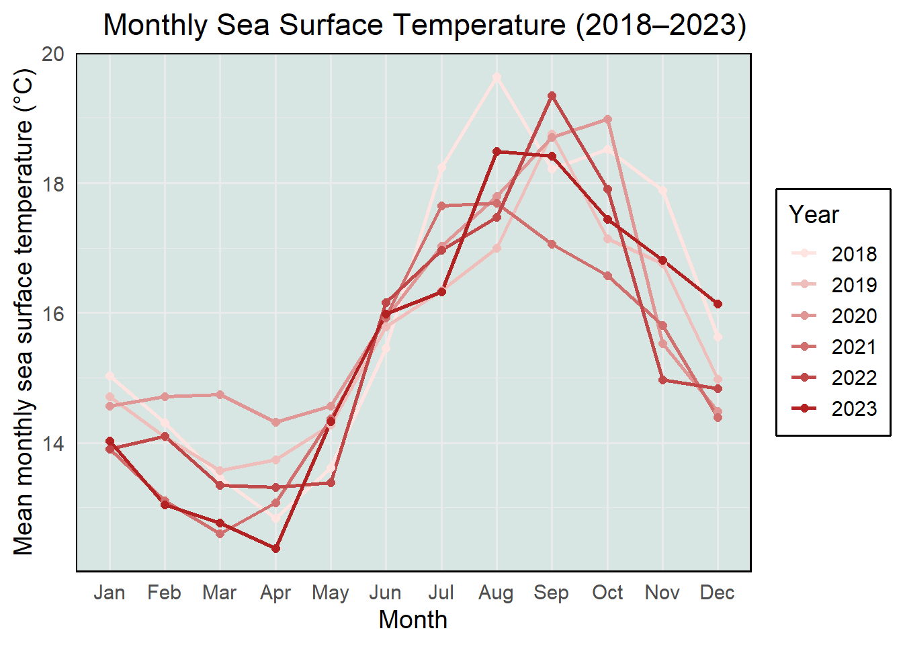

a: In part 1, they preformed a Pearson correlation test in order to evaluate whether there is a linear relationship between two continuous variables, which were distance from headwater (km) and annual total nitrogen load (kg/year). In part 2, they used an ANOVA test to compare the means of nitrogen load across multiple groups.
b: It would be useful to include further summary statistics such as mean, standard deviation, or sample size. This would provide context on the magnitude and spread of nitrogen load values within each source group. Because ANOVA only determines if at least one group differs significantly, a Post-Hoc test such as Tukey’s HSD would also be useful to compare all pairs of sources to identify which differ in mean nitrogen load significantly.
c: Part 1: Nitrogen load increased with distance from the headwater, suggesting that downstream areas receive more nitrogen annually (Pearson correlation test, r=correlation coefficient, p=0.03, a=significance level.
Part 2: Average nitrogen load differed significantly among sources, indicating that some land use types contribute more nitrogen than others. (One way ANOVA, f=f statistic, df=degrees of freedom, p=0.02, a=significance level).
Problem 2
a:
# Loading in packageslibrary(tidyverse)
── Attaching core tidyverse packages ──────────────────────── tidyverse 2.0.0 ──
✔ dplyr 1.1.4 ✔ readr 2.1.5
✔ forcats 1.0.0 ✔ stringr 1.5.1
✔ ggplot2 3.5.1 ✔ tibble 3.2.1
✔ lubridate 1.9.4 ✔ tidyr 1.3.1
✔ purrr 1.0.4
── Conflicts ────────────────────────────────────────── tidyverse_conflicts() ──
✖ dplyr::filter() masks stats::filter()
✖ dplyr::lag() masks stats::lag()
ℹ Use the conflicted package (<http://conflicted.r-lib.org/>) to force all conflicts to become errors
Attaching package: 'janitor'
The following objects are masked from 'package:stats':
chisq.test, fisher.test
library(DHARMa)
This is DHARMa 0.4.7. For overview type '?DHARMa'. For recent changes, type news(package = 'DHARMa')
library(MuMIn)# Reading in datasst <-read.csv("data/SST_update2023.csv", stringsAsFactors =FALSE)# Cleaning and summarizing sst_clean <- sst |>mutate(date =ymd(date)) |># Converting date column to Date Typemutate(year =factor(year(date)),month =factor(month(date, label =TRUE), # Extracting year as a factorlevels = month.abb, ordered =TRUE) # Extracting month as a factor ) |>group_by(year, month) |># Grouping by year and monthsummarise(mean_monthly_sst =mean(temp, na.rm =TRUE), # Calculating monthly mean SST.groups ="drop")# Displaying 5 rows from cleaned data sst_clean |>slice_sample(n =5)
# A tibble: 5 × 3
year month mean_monthly_sst
<fct> <ord> <dbl>
1 1988 Jun 13.7
2 2012 Feb 13.4
3 1991 Sep 16.8
4 2018 Jul 18.2
5 1990 Oct 17.7
# Filter sst_clean to include only years 2018 through 2023sst_filtered <- sst_clean %>%mutate(year =factor(year)) %>%filter(year %in%c("2018", "2019", "2020", "2021", "2022", "2023"))# Creating custom color gradientyears <-sort(unique(sst_filtered$year))color_gradient <-colorRampPalette(c("mistyrose", "firebrick"))(length(years))names(color_gradient) <- years# Creating plotggplot(sst_filtered, aes(x = month, y = mean_monthly_sst, group = year, color = year)) +geom_line(size =1) +geom_point(size =2) +scale_color_manual(values = color_gradient) +labs(title ="Monthly Sea Surface Temperature (2018–2023)",x ="Month",y ="Mean monthly sea surface temperature (°C)",color ="Year" ) +theme_minimal(base_size =14) +theme(plot.title =element_text(hjust =0.85), # Shift title rightpanel.background =element_rect(fill ="#d7e5e3", color =NA), # Background colorpanel.border =element_rect(fill =NA, color ="black", size =0.8), # Borderlegend.position =c(0.1, 0.8), # Legend inside plot panel (x, y from 0 to 1)legend.background =element_rect(fill ="white", color ="black") )
Warning: Using `size` aesthetic for lines was deprecated in ggplot2 3.4.0.
ℹ Please use `linewidth` instead.
Warning: The `size` argument of `element_rect()` is deprecated as of ggplot2 3.4.0.
ℹ Please use the `linewidth` argument instead.
Warning: A numeric `legend.position` argument in `theme()` was deprecated in ggplot2
3.5.0.
ℹ Please use the `legend.position.inside` argument of `theme()` instead.

Problem 3
# Reading and cleaning datanest_boxes <-read_csv("data/occdist.csv") %>% janitor::clean_names() %>%# Clean column namesmutate(season =as.factor(season), # 2016 or 2019sp =as.factor(sp), # 1 = Swift Parrot 0 = otheredge_distance =as.numeric(edge_distance) )
Rows: 227 Columns: 10
── Column specification ────────────────────────────────────────────────────────
Delimiter: ","
chr (4): box, box occupant, eventID, repeated use
dbl (6): edge distance, season, sp, cs, e, tm
ℹ Use `spec()` to retrieve the full column specification for this data.
ℹ Specify the column types or set `show_col_types = FALSE` to quiet this message.
a: In this data set, a 1 or 0 in the sp column indicates whether a Swift Parrot occupied a given nest box. A 1 means the nest box was occupied by a Swift Parrot, whereas a 0 means it was not.
b: In this study, the main difference between Swift Parrots and other species is that they are the critically endangered target species that the nest box is meant to support, whereas Common Starlings are invasive and Tree Martins are native competitors. Because these species may also use the boxes, they could benefit competitors more than the target species, potentially hindering conservation efforts.
c: The two seasons referred to in this study are 2016 and 2019. These differ in that 2016 had unusually high Swift Parrot breeding activity, whereas 2019 had very low Swift Parrot breeding activity, which the authors used to compare nest box occupancy patterns between high and low breeding seasons.
d:
# Creating tablemodel_table <-tibble(model_number =c("model0", "model1", "model2", "model3"),season =c("no", "yes", "yes", "no"),edge_distance =c("no", "yes", "yes", "no"),description =c("Null Model (intercept only)","Saturated Model with Season and Distance","Model With Season Only","Model with Distance Only" ) )# Showingprint(model_table)
# A tibble: 4 × 4
model_number season edge_distance description
<chr> <chr> <chr> <chr>
1 model0 no no Null Model (intercept only)
2 model1 yes yes Saturated Model with Season and Distance
3 model2 yes yes Model With Season Only
4 model3 no no Model with Distance Only
e:
# Defining modelsmodel0 <-glm(sp ~1, data = nest_boxes, family = binomial) # Null modelmodel1 <-glm(sp ~ season + edge_distance, data = nest_boxes, family = binomial) # Saturated modelmodel2 <-glm(sp ~ season, data = nest_boxes, family = binomial) # Season onlymodel3 <-glm(sp ~ edge_distance, data = nest_boxes, family = binomial) # Distance only
f:
# Model 0 diagnosticsres0 <-simulateResiduals(fittedModel = model0)plot(res0)
# Model 1 diagnosticsres1 <-simulateResiduals(fittedModel =model1)plot(res1)
# Model 2 diagnosticsres2 <-simulateResiduals(fittedModel =model2)plot(res2)
# Model 3 diagnosticsres3 <-simulateResiduals(fittedModel =model3)plot(res3)
g:
# Creating a model listmodel_list <-list(model0 = model0,model1 = model1,model2 = model2,model3 = model3)# Compare using AICaic_table <-model.sel(model_list)# Printprint(aic_table)
The best model as determined by the AIC (Akaike’s Information Criterion) was the model including season and distance to forest edge as predictors of Swift Parrot nest box occupancy. This model had the lowest AIC value (226.3), indicating the best balance of fit and simplicity among the models.
h:
# Refitting best modelbest_model <-glm(sp ~ season + edge_distance, data = nest_boxes, family = binomial)# Creating new plotnewdata <-expand.grid(edge_distance =seq(min(nest_boxes$edge_distance), max(nest_boxes$edge_distance), length.out =100),season =unique(nest_boxes$season))# Getting predicted probabilities and confidence intervalspredictions <-predict(best_model, newdata = newdata, type ="link", se.fit =TRUE)# Adding predictions and confidence intervals to newdatanewdata <- newdata %>%mutate(fit_link = predictions$fit,se_link = predictions$se.fit,lower_link = fit_link -1.96* se_link,upper_link = fit_link +1.96* se_link,fit_prob =plogis(fit_link),lower_prob =plogis(lower_link),upper_prob =plogis(upper_link) )# Plotggplot () +# Raw data pointsgeom_point(data = nest_boxes, aes(x = edge_distance, y = sp, color = season), alpha =0.6) +# Model predictionsgeom_line(data = newdata, aes(x = edge_distance, y = fit_prob, color = season), size =1.2) +geom_ribbon(data = newdata, aes(x = edge_distance, ymin = lower_prob, ymax = upper_prob, fill = season), alpha =0.3) +labs(x ="Distance to Forest Edge (m)",y ="Probability of Swift Parrot Occupancy",color ="Season",fill ="Season",title ="Model Predictions for Swift Parrot Nest Box Occupancy" ) +theme_minimal(base_size =14) +theme(panel.grid =element_blank(), # Removing gridlinespanel.background =element_rect(fill ="#f7f7f7", color =NA), # Light backgroundlegend.position ="right" ) +# ADding custom colorsscale_color_manual(values =c("2016"="#0072B2", "2019"="#D55E00")) +scale_fill_manual(values =c("2016"="#0072B2", "2019"="#D55E00"))
i:
Figure1: Model Predictions for Swift Parrot Nest Box Occupancy. This figure shows predicted probabilities of Swift Parrot (Lathamus discolor) occupancy in nest boxes based on distance to the forest edge for the 2016 and 2019 breeding seasons. Solid lines represent model predicted probabilities from a logistic regression with 95% confidence intervals (shaded bands) while points represent observed data (1 = occupied by Swift Parrots, 0 =not occupied). The model includes season and distance to forest edge as predictors.
Source: Stojanovic, Dejan et al. (2021). Do nest boxes breed the target species or its competitors? A case study of a critically endangered bird [Dataset]. Dryad. https://doi.org/10.5061/dryad.83bk3j9sb
j:
# Creating new data framenew_data <-expand.grid(edge_distance =c(0, 900),season =factor(c(2016, 2019)) # Treating season as factor)# Generating predicted probabilities and 95% confidence intervalspredicted <-predict( model1,newdata = new_data,type ="response", # Getting probabilitiesse.fit =TRUE# Getting standard errors for CI)# Calculating 95% Confidence Intervalsnew_data$fit <- predicted$fitnew_data$lwr <- predicted$fit -1.96* predicted$se.fitnew_data$upr <- predicted$fit +1.96* predicted$se.fit# Displaying resultsnew_data
k: These results show that the predicted probability of Swift Parrot nest box occupancy is highest at the forest edge (0m) and decreases substaintially at 900m from the edge, in both 2016 and 2019. At 0m, the predicted occupancy probability was 48.1% in 2016 and 29.8% in 2019. At 900m, the probabilities dropped to 12.5% in 2016 and 6.1% in 2019. This pattern suggests a negative relationship between distance from the forest edge and nest box occupancy by Swift Parrots, whereas lower probabilities in 2019 may indicate less favorable environmental conditions or a lower population during that period. This suggests that Swift Parrots may rely on forest edges for food, resources, and nesting habitats, and may avoid the forest interior due to risk of predation or a lack of resources.
Problem 4
a: My exploratory visualizations from Homework 2 were much simpler, using a box plot and a linear plot comparing line wait times with number of people in line. Homework 2 had less data and highlighted medians, quartiles, and spread, however, my affective visualization from Homework 3 compared means using a dot and diamond plot. Due to its higher complexity and gradient, this was more useful in both comparing and emphasizing the emotional experience of waiting, using color and point size to communicate intensity and variation in wait durations between weekdays and weekends.
b: Both visualizations include plots that compare wait times across weekdays and weekends. These also use similar x and y-axis labeling.
c: Both visualizations show that wait times have a tendency to be longer on weekdays than weekends. The boxplot highlights that weekdays tend to have more variable wait times and have a higher median, whereas the affective plot demonstrates this using individual data points and more abstract methods, such as the red-green gradient.
d: One piece of feedback I got was to add another medium. Using this feedback, I got the idea to use my R plot for the gradient, precise data points, and mean, and use digital art to represent the data points with a coffee cup. This would include both the emotional evocation of the color gradient while adding artistic elements that are relevant to the data, which was collected from a coffee shop.